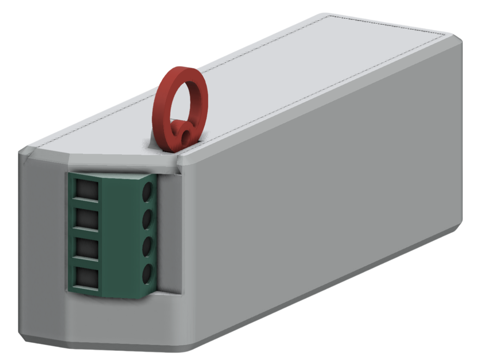
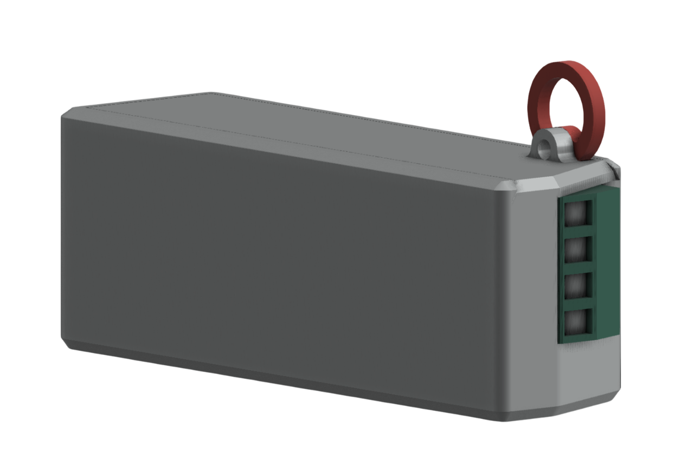
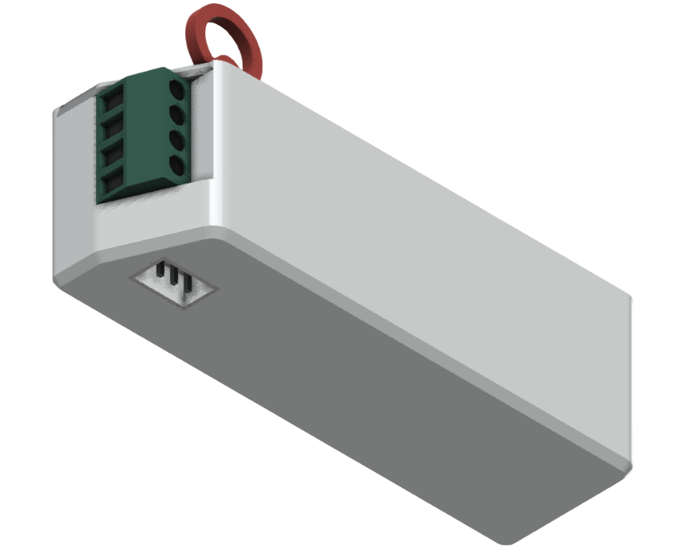
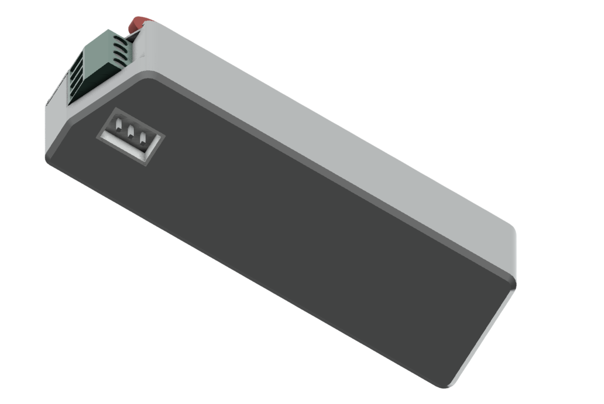
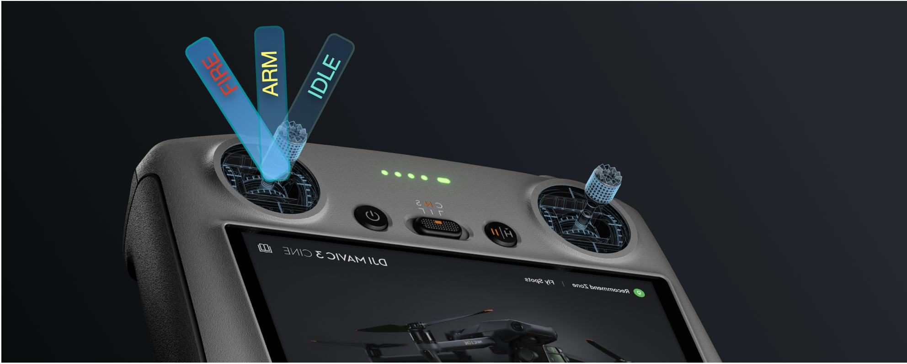
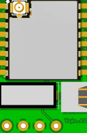
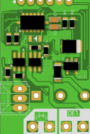

Vujko_4.2.2
Плата ініціації
Електронний пристрій ініціації боєприпасу VUJKO. Це детонатор подвійного призначення з можливістю динамічного веб-налаштування, який можна використовувати в поєднанні з БПЛА FPV як бортовий пристрій ініціювання як з індивідуальним джерелом живлення, так і від FPV або використовувати як індивідуальний пристрій ініціювання для введення в дію первинного заряду у вибуховій речовині пристроїв, що використовують ЗСУ.
Налаштування та запуск
Це детонатор подвійного призначення, який можна використовувати як індивідуальний пристрій ініціювання для ручних саморобних вибухових пристроїв або в поєднанні з БПЛА FPV як бортовий пристрій ініціювання з індивідуальним джерелом живлення.

Особливості
Вбудований акселерометр
Забезпечує точну ініціацію вибуху (чутливість програмується).
Програмування параметрів
Веб-інтерфейс дозволяє швидко налаштувати плату під конкретні параметри.
Таймер самознищення
Запускає таймер самознищення плати через 20 хвилин після активації плати.
Автономність
ПІ має власне джерело живлення від вбудованої батарейки 6...9B, що гарантує її працездатність та забезпечує тривалу автономність.
Зручний монтаж
Може встановлюватись на будь-який тип дронів або безпосередньо на вибухівку в будь-якому положенні.
Умови ініціації VUJKO_4.2
Режим БПЛА
- Перевантаження ≥ 10G;
- PWM-сигнал FIRE на вхід «Servo1» 2000 мкс після активного РWM-сигналу ARM 1500
мкс шляхом переключення 3-х перемикача на пульті управління;
- Спрацювання “Вусиків” (лише за наявності PWM-сигналу ARM 1500мкс.)
- Закінчення таймеру самознищення 20хв після крайнього ARM-у.
Режим стаціонарної міни
- Зовнішній механічний вплив на положення ініціатора
- Закінчення таймеру самознищення 20хв після ініціалізації
Вторинний безпековий таймер 10 сек після входження в бойовий режим не дозволить
відбутись непередбачуваній детонації.


Безпека

Механічний рівень
Механічна кнопка, яка
дозволяє дистанційне увімкнення ПІ,
забезпечуючи безпеку
оператора.
Програмний рівень
ПІ розпізнає прискорення у просторі
після чого переходить
в бойовий режим.
Апаратний рівень
Захист від КЗ (короткого замикання)
та двоступеневий електронний
запобіжник для
унеможливлення
випадкового спрацьовування.

| Технічні характеристики плати ініціації VUJKO_4.2 | |
|---|---|
| Тип пристрою | Автономний ініціатор вибуху |
| Cумісність | ALL FPV+ Stationary IED Дрон/стаціонарна міна |
| Джерело живлення | Вбудована батарейка 9B/стек дрона |
| Габаритні характеристики(довжина, ширина, висота), мм | 30х20х12 |
| Вага плати ініціації, г | 60 |
| Кількість запобіжників | 5 |
| Вбудований акселерометр | + |
| Кріплення на БПЛА(тип) | Стяжки |
| Захисний корпус | + |
| Ввімкнення живлення пристрою | Механічний вимикач, активується видаленням запобіжника(чека) |
| Функціональні характеристики плати ініціації VUJKO_4.2 | |
|---|---|
| Індикація стану(візуальний індикатор) | + |
| індикація стану(звуковий індикатор) | - |
| Механічна чека активації плати | + |
| Таймер безпечного періоду, хв | 2хв + 10сек, або програмується |
| Таймер самознищення(самоліквідації) | 20хв, або програмується |
Номер телефону: 380980041411
Пошта: сontact@vujko.net
https://linktr.ee/vujko.net
Ми завжди на еволюційному процесі і стараємось робити тільки краще для ЗСУ.